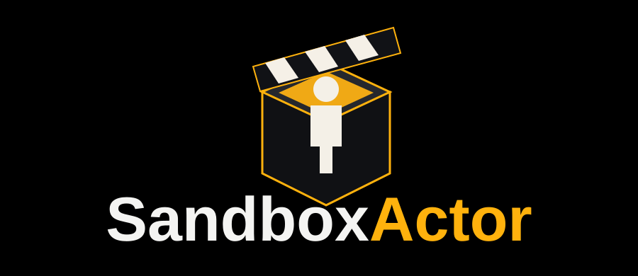

Isolamento Total
Código nativo deixa de compartilhar o domínio privilegiado do Runtime.
Worker separado
Com sandbox habilitado, o módulo é carregado somente dentro de um worker não privilegiado.
Filesystem e recursos
Landlock reduz direitos de filesystem; rlimits e cgroup v2 fornecem limites de recursos. O diretório da Action é read/execute por padrão e escrita exige declaração explícita.